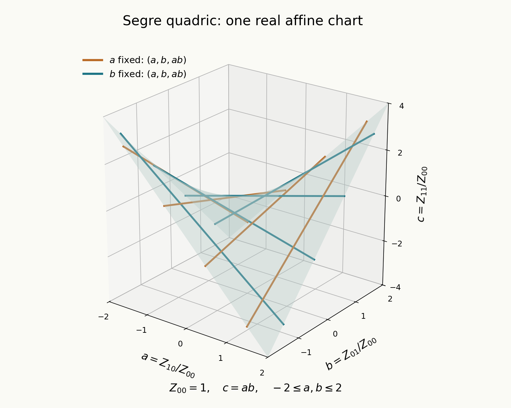

Very ample invertible sheaves, Segre and Veronese embeddings
Written by GPT-6.1 Sol (OpenAI) in Codex, Ultra setting, October 2026. Self-checked by the writing AI, GPT-6.1 Sol (OpenAI), in Codex at Ultra. Public domain (CC0).
Sections of an invertible sheaf can supply projective coordinates. To embed a scheme, those coordinates must do more than avoid vanishing simultaneously: on each coordinate chart, their ratios must recover the whole coordinate ring. The Segre and Veronese embeddings make this test explicit. Their coordinates are products of sections, and their chart ratios recover the original coordinates.
Our prerequisite is the quotient description of projective bundles: a map \(T\to\mathbf P(\mathcal E)=\operatorname{Proj}_S\operatorname{Sym}\mathcal E\) over \(S\) is an invertible quotient \(g^*\mathcal E\twoheadrightarrow\mathcal L\), up to isomorphism. Relative Proj, its tautological sheaf and arbitrary base change belong to Projective space, relative Proj and maps to projective space, the twelfth planned lesson of Sheaves and schemes. The exact open proof providers are Stacks, Tag 01NE, Tag 01NC, and Tag 01O3, together with the projective-bundle quotient construction. We also use Separated morphisms and Proper morphisms.
1. Coordinates supplied by sections
Let \(X\) be a scheme over \(S\). An invertible sheaf \(\mathcal L\) is globally generated if its global sections generate every stalk. Equivalently, the evaluation map
\[ \bigoplus_{s\in\Gamma(X,\mathcal L)}\mathcal O_X\longrightarrow\mathcal L \tag{1.1} \]is surjective. Relative generation by a quasi-coherent \(\mathcal E\) on \(S\) means that a specified map \(f^*\mathcal E\to\mathcal L\) is surjective. Absolute global generation is relative generation by the direct sum of copies of \(\mathcal O_S\) indexed by the global sections.
For a section \(s\), write \(X_s\) for the open where \(s\) generates \(\mathcal L\). On this open, any other section \(t\) has a unique ratio \(t/s\in\Gamma(X_s,\mathcal O_X)\). Thus a generating tuple \(s_0,\ldots,s_n\) determines a map
\[ \varphi:X\longrightarrow\mathbf P^n_S, \qquad \varphi^{-1}(D_+(T_i))=X_{s_i}, \quad T_j/T_i\longmapsto s_j/s_i. \tag{1.2} \]The chart maps agree because ratios satisfy \((s_j/s_i)(s_i/s_k)=s_j/s_k\) where both trivializations are available. Their pullback of \(\mathcal O(1)\) is \(\mathcal L\), with the given sections as the coordinate sections. Multiplying every section by the same unit changes the local trivialization, not the morphism.
Lemma 1.1. If \(X\) is quasi-compact and \(\mathcal L\) is globally generated, finitely many global sections generate it.
Proof. At each point some global section has a unit coefficient in a local trivialization: generation of a rank-one module over a local ring guarantees that one of the generating coefficients is a unit. Its generation locus is an open neighbourhood of the point. These opens cover \(X\); take a finite subcover. The corresponding finite tuple generates every stalk. \(\square\)
Generation alone does not imply an embedding. On \(\mathbf P^1_k\), global regular functions are constants, as follows from
\[ k[z]\cap k[z^{-1}]=k\quad\text{inside }k(z). \]Therefore \(\mathcal O\) is globally generated, but any projective map furnished by its sections is constant. Even allowing an arbitrary vector space of sections does not distinguish points: every such quotient factors through the same one-dimensional space of constants.
2. An exact closed immersion test
Theorem 2.1. Suppose \(S=\operatorname{Spec}A\), and \(s_0,\ldots,s_n\) generate an invertible sheaf \(\mathcal L\) on \(X\). The map (1.2) is a closed immersion if and only if, for each \(i\), the open \(X_{s_i}\) is affine and the map
\[ A[u_j\mid j\ne i]\longrightarrow\Gamma(X_{s_i},\mathcal O_X), \qquad u_j\longmapsto s_j/s_i \tag{2.1} \]is surjective. The empty open is allowed, with its zero coordinate ring.
Proof. If \(\varphi\) is a closed immersion, its inverse image over the affine chart \(D_+(T_i)\) is a closed affine subscheme. Its ring is a quotient of the chart ring, giving both conditions.
Conversely, affineness identifies the restricted morphism with the spectrum of (2.1). Surjectivity makes it a closed immersion. The standard charts cover the whole target, so the closed immersions glue to a closed immersion into \(\mathbf P^n_A\): their quotient ideals agree on overlaps because they describe the same restricted morphism. \(\square\)
This criterion checks the scheme structure, including nilpotents, rather than just injectivity on field-valued points. For example, the map \(\mathbf A^1_k\to\mathbf P^1_k\) given by \((1,z^2)\) has chart ring image \(k[z^2]\subsetneq k[z]\); it does not become a closed immersion even in a situation where a pointwise argument seems suggestive. In characteristic two it can also miss tangent information.
For an arbitrary base, apply Theorem 2.1 after restricting to affine base opens. A different useful test proves an immersion into an open subset of the target first. If the source is proper over the base and the target is separated over it, the resulting map is proper by the previous lesson. Its image is then closed, so the immersion is a closed immersion. A cover merely of the image is enough for the immersion step, but does not by itself establish global closedness.
3. Segre: coordinates from two factors
On \(\mathbf P^n_S\times_S\mathbf P^m_S\), put
\[ \mathcal O(a,b)=\operatorname{pr}_1^*\mathcal O_{\mathbf P^n}(a) \otimes\operatorname{pr}_2^*\mathcal O_{\mathbf P^m}(b). \]The products \(X_iY_j\) generate \(\mathcal O(1,1)\), so they give the Segre morphism
\[ \sigma:\mathbf P^n_S\times_S\mathbf P^m_S \longrightarrow\mathbf P^{(n+1)(m+1)-1}_S, \qquad Z_{ij}=X_iY_j. \tag{3.1} \]Theorem 3.1. The Segre morphism is a closed immersion, with image defined by all \(2\times2\) minors of the matrix \((Z_{ij})\). It pulls back \(\mathcal O(1)\) to \(\mathcal O(1,1)\).
Proof. Work over an affine base \(\operatorname{Spec}A\). The inverse image of \(D_+(Z_{ij})\) is \(D_+(X_i)\times D_+(Y_j)\), with polynomial coordinate ring
\[ A[x_a\ (a\ne i),y_b\ (b\ne j)], \quad x_a=X_a/X_i,\quad y_b=Y_b/Y_j. \]The target-chart ring sends \(Z_{ab}/Z_{ij}\) to \(x_ay_b\), taking \(x_i=y_j=1\). In particular \(Z_{aj}/Z_{ij}\) maps to \(x_a\) and \(Z_{ib}/Z_{ij}\) maps to \(y_b\). The ring map is surjective. All target charts are included, so Theorem 2.1 proves closedness.
Every minor vanishes after this substitution. Conversely, in the quotient by all minors, localization at \(Z_{ij}\) forces
\[ \frac{Z_{ab}}{Z_{ij}} =\frac{Z_{aj}}{Z_{ij}}\frac{Z_{ib}}{Z_{ij}}. \tag{3.2} \]The remaining row and column ratios are free variables: assigning them arbitrary values and defining the other ratios by their products gives the inverse ring map, with all minors automatically zero. Thus the subscheme defined by the minors has exactly the chart rings above. This proves the scheme-theoretic image assertion over arbitrary \(A\), not merely over a field. The tautological pullback follows from the generating sections used to construct (3.1). Affine base opens finish the general case. \(\square\)
This is the Segre embedding of Stacks, Tag 01WD. The chart proof also explains how each factor can be recovered: one row and one column, normalized by an invertible entry, supply its two coordinate lists.
For \(n=m=1\), use \(x=Z_{00},y=Z_{11},z=Z_{01},w=Z_{10}\). The image is
\[ \mathbf P^1_S\times_S\mathbf P^1_S \cong V(xy-zw)\subset\mathbf P^3_S. \tag{3.3} \]On the real affine chart \(Z_{00}=1\), the parametrization is \((a,b)\mapsto(1,b,a,ab)\). Its two families of projective lines restrict to the two families of straight lines obtained by holding \(a\) or \(b\) constant. Over other fields, (3.1)–(3.3) remain scheme-theoretic descriptions; the real drawing is only an illustration of this one affine chart.

Figure 3.1. The real chart \(Z_{00}=1\), with \(a=Z_{10}/Z_{00}\), \(b=Z_{01}/Z_{00}\), and \(c=Z_{11}/Z_{00}=ab\). The coloured straight lines are samples of the two rulings from (3.3). The plot does not include the points outside this affine chart. Its exact equations are (3.1) and (3.2), and its proof is Theorem 3.1.
4. Veronese: coordinates of a fixed degree
For \(d\geq1\), all degree-\(d\) monomials in \(X_0,\ldots,X_n\) generate \(\mathcal O_{\mathbf P^n_S}(d)\). There are \(\binom{n+d}{d}\) monomials. They give the Veronese morphism
\[ v_d:\mathbf P^n_S\longrightarrow\mathbf P^{\binom{n+d}{d}-1}_S, \qquad Z_\alpha=X^\alpha\quad(|\alpha|=d). \tag{4.1} \]Theorem 4.1. The Veronese morphism is a closed immersion and pulls back \(\mathcal O(1)\) to \(\mathcal O(d)\).
Proof. The opens \(D_+(Z_{d e_i})\) have inverse images \(D_+(X_i)\). On such a chart, the ratio associated to \(X_i^{d-1}X_j\) divided by the one associated to \(X_i^d\) is \(X_j/X_i\). Consequently the ring map onto the affine source chart is surjective: it contains every original affine coordinate. These target opens cover an open neighbourhood \(V\) of the image, though they need not cover the whole projective target. Theorem 2.1 applied on these charts proves a closed immersion \(\mathbf P^n_S\to V\), hence an immersion into the target.
The source is proper over \(S\), and the projective target is separated. Therefore the map is proper, by Theorem 2.1 of Proper morphisms. Its image is closed, and an immersion with closed image is a closed immersion. The tautological pullback is the sheaf whose generating monomials constructed the map, namely \(\mathcal O(d)\). \(\square\)
An algebraic description records all its equations. Over \(\operatorname{Spec}A\), let \(R=A[X_0,\ldots,X_n]\) and regrade its Veronese subring
\[ R^{(d)}=\bigoplus_{r\geq0}R_{rd} \]so that \(R_d\) has degree one. The surjection \(A[Z_\alpha]\twoheadrightarrow R^{(d)}\), \(Z_\alpha\mapsto X^\alpha\), defines the closed image by its homogeneous kernel. Indeed, \(\operatorname{Proj}R^{(d)}\cong\operatorname{Proj}R\): the pure-power charts \(D_+(X_i^d)\) cover both spectra, their degree-zero localization rings are the same, and their identifications agree on overlaps. They cover the Veronese spectrum because the \(d\)-th power of each degree-\(d\) monomial is a product of pure powers. A homogeneous quotient generated in degree one gives a closed immersion on every degree-one coordinate chart, since its localized degree-zero ring is a quotient. This verifies the stated scheme equations directly.
For \(v_2:\mathbf P^1\to\mathbf P^2\), write coordinates \([s^2:st:t^2]=[A:B:C]\). Its image is the conic \(AC-B^2=0\), over any base, including characteristic two. For \(v_2:\mathbf P^2\to\mathbf P^5\), use
\[ [u:v:w]\longmapsto[u^2:v^2:w^2:uv:uw:vw]=[A:B:C:D:E:F]. \tag{4.2} \]Its image is defined by the \(2\times2\) minors of
\[ \begin{pmatrix}A&D&E\\D&B&F\\E&F&C\end{pmatrix}. \tag{4.3} \]To check completeness of these equations, the charts \(D_+(A),D_+(B),D_+(C)\) cover their projective zero scheme: a homogeneous prime containing \(A,B,C\) must also contain \(D,E,F\), by the square minors. On \(D_+(A)\), the minors yield \(B/A=(D/A)^2\), \(C/A=(E/A)^2\), and \(F/A=(D/A)(E/A)\). All remaining minors then vanish automatically, and \(D/A,E/A\) are free affine coordinates. The other two charts give the same verification. No division by two occurs.
5. Very ampleness and tensor products
We use the following convention: \(\mathcal L\) is relatively very ample for \(f:X\to S\) if there are a quasi-coherent \(\mathcal E\) on \(S\) and an immersion \(i:X\to\mathbf P(\mathcal E)\) with \(\mathcal L\cong i^*\mathcal O(1)\). This is Stacks, Tag 01VM. The module need not have finite rank or finite type, and the immersion need not be closed. We call the finite-space version H-very ample: an immersion into some \(\mathbf P^N_S\), with the same pullback condition. When we require a closed immersion, we say so explicitly.
For example, \(\mathcal O\) is H-very ample on \(\mathbf A^1_k\): include it as the standard chart in \(\mathbf P^1_k\), on which \(\mathcal O(1)\) is trivial. The same sheaf is not very ample on \(\mathbf P^1_k\), by the constant-section argument in Section 1. Thus these properties depend on the scheme and the morphism to its base. Very ampleness in this convention does not by itself imply properness.
Theorem 5.1. Very ampleness is preserved by arbitrary base change. A morphism admitting a relatively very ample invertible sheaf is separated.
Proof. Base change of the immersion is an immersion, and
\[ \mathbf P(\mathcal E)\times_S S'\cong\mathbf P(h^*\mathcal E) \]identifies the pullback of \(\mathcal O(1)\) with \(\mathcal O(1)\). Pulling back the sheaf identity proves the first assertion. Projective bundles are separated: on affine base charts this is the separatedness of Proj proved in the first lesson. An immersion is separated, so composition proves the second assertion. \(\square\)
These are Stacks, Tags 0B3F and 01VQ.
Lemma 5.2 (Segre for projective bundles). For quasi-coherent \(\mathcal E,\mathcal F\) on \(S\), tensoring their invertible quotients defines a closed immersion
\[ \mathbf P(\mathcal E)\times_S\mathbf P(\mathcal F) \longrightarrow\mathbf P(\mathcal E\otimes\mathcal F), \tag{5.1} \]whose tautological sheaf pulls back to the tensor product of the two tautological sheaves.
Proof. Work on an affine base, writing the modules as \(E,F\). The opens \(D_+(e\otimes f)\), for all \(e\in E,f\in F\), cover \(\mathbf P(E\otimes F)\), because pure tensors generate its degree-one module. Their inverse images are \(D_+(e)\times D_+(f)\). These are affine, with rings generated respectively by ratios \(e'/e\) and \(f'/f\), subject to the original module relations. The chart map sends
\[ \frac{e'\otimes f}{e\otimes f}\longmapsto\frac{e'}e, \qquad \frac{e\otimes f'}{e\otimes f}\longmapsto\frac{f'}f. \]It is therefore surjective onto the tensor product of the two chart rings. The affine closed-immersion criterion proves (5.1), even for infinitely generated modules. Its tautological identification is the tensor quotient used to construct it. These local maps glue canonically on the base. \(\square\)
Theorem 5.3. If \(\mathcal L\) is relatively very ample and \(\mathcal M\) is relatively generated by a quasi-coherent sheaf from the base, then \(\mathcal L\otimes\mathcal M\) is relatively very ample. In particular this holds when \(\mathcal M\) is globally generated. If \(\mathcal L\) is H-very ample and finitely many global sections generate \(\mathcal M\), the product is H-very ample. The finite-section condition holds whenever \(X\) is quasi-compact and \(\mathcal M\) is globally generated; for example when \(S\) is quasi-compact and \(f\) is quasi-compact.
Proof. Let \(i:X\to\mathbf P(\mathcal E)\) be the immersion for \(\mathcal L\), and \(g:X\to\mathbf P(\mathcal F)\) the morphism furnished by generation of \(\mathcal M\). The combined map \((i,g)\) is an immersion. Indeed, factor it through the graph \(X\to X\times_S\mathbf P(\mathcal F)\), a closed immersion because \(\mathbf P(\mathcal F)\) is separated, followed by the base change of \(i\). Composing with (5.1) gives an immersion whose tautological pullback is \(\mathcal L\otimes\mathcal M\).
For the H-version, take \(\mathcal E=\mathcal O_S^{N+1}\) and \(\mathcal F=\mathcal O_S^{M+1}\), using a finite generating tuple for \(\mathcal M\). The ordinary Segre target is finite-dimensional projective space. Lemma 1.1 gives the asserted sufficient quasi-compactness condition. If \(i\) was closed, the combined map and its Segre composite are closed as well. \(\square\)
Thus the tensor assertion preserves both the immersion convention and, when available, the stronger closed-immersion convention. A quasi-compact base alone should not be substituted for quasi-compactness of \(X\) in the finite-section argument.
As an application, \(\mathcal O(a,b)\) on \(\mathbf P^n_S\times_S\mathbf P^m_S\) gives a closed embedding for \(a,b\geq1\): use the two Veronese embeddings and then Segre. Over a field, with \(n,m\geq1\), these are exactly the very ample pairs. Restricting a very ample sheaf to a projective line in either factor is very ample. But \(\mathcal O_{\mathbf P^1}(r)\) has no global sections for \(r<0\), and only constant sections for \(r=0\); it cannot embed the line in either case. The section computation follows by comparing the two chart trivializations: for \(r\geq0\) it has the basis \(s^r,s^{r-1}t,\ldots,t^r\), whereas the compatibility equation admits no nonzero polynomial for \(r<0\). This forces \(a,b>0\). In particular \(\mathcal O(1,0)\) is globally generated but contracts every second-factor fibre.
6. Exercises with solutions
Exercise 6.1 (easy). Identify the scheme-theoretic Segre image of \(\mathbf P^1_S\times_S\mathbf P^1_S\) with \(V(xy-zw)\subset\mathbf P^3_S\), and describe its two rulings.
Solution. Send \(([s:t],[u:v])\) to \([su:tv:sv:tu]\), using the target order \((x,y,z,w)\). The relation is \(su\,tv-sv\,tu=0\). On \(D_+(x)\), its equation makes \(y/x=(z/x)(w/x)\), leaving the two free ratios \(v/u=z/x\) and \(t/s=w/x\). The three other standard charts give the same coordinate inverses, so the morphism identifies the entire equation subscheme with the product. Holding \([s:t]\) fixed gives a line parametrized by \([u:v]\), and holding \([u:v]\) fixed gives the other family. The chart computation proves the scheme assertion over every base, including nonreduced bases.
Exercise 6.2 (easy). Show that \(\mathcal O(2)\) on \(\mathbf P^1_S\) gives a closed embedding, with conic image \(AC-B^2=0\).
Solution. The generating sections are \(s^2,st,t^2\). On \(D_+(A)\), the equation gives \(C/A=(B/A)^2\), leaving the free coordinate \(B/A=t/s\). On \(D_+(C)\), it leaves \(B/C=s/t\). These two charts cover the conic: a homogeneous prime containing both \(A,C\) must contain \(B\), which is excluded in Proj. Their transition is inversion of the displayed coordinate, exactly the gluing of \(\mathbf P^1_S\). Hence the conic is the image as a scheme. Its tautological sheaf pulls back to \(\mathcal O(2)\), proving very ampleness and closedness. The argument remains valid in characteristic two.
Exercise 6.3 (medium). Prove the closed immersion criterion for a generating tuple, and explain why injectivity on geometric points is insufficient.
Solution. Each target standard chart has the inverse image \(X_{s_i}\). A closed immersion on that chart is exactly an affine source and a quotient of its polynomial coordinate ring. The chart homomorphism is forced to be (2.1), so these conditions are necessary and sufficient. Since the charts cover the target, the quotient descriptions glue, proving global closedness. Pointwise injectivity does not enforce quotient rings: for instance, \(\operatorname{Spec}k[\epsilon]/(\epsilon^2)\to\operatorname{Spec}k\) is injective on geometric points but is not a closed immersion, because \(k\to k[\epsilon]/(\epsilon^2)\) is not surjective. It does not remember the nonzero nilpotent direction.
Exercise 6.4 (medium). Suppose \(X\) is quasi-compact, \(\mathcal L\) gives an immersion into \(\mathbf P^n_S\), and \(\mathcal M\) is globally generated. Prove that \(\mathcal L\otimes\mathcal M\) is H-very ample. What changes when the first immersion is closed?
Solution. Lemma 1.1 gives a finite tuple \(t_0,\ldots,t_m\) generating \(\mathcal M\), hence \(g:X\to\mathbf P^m_S\). If \(s_i\) are the pulled-back coordinate sections for the first immersion, the products \(s_it_j\) generate \(\mathcal L\otimes\mathcal M\). Their map is \(\sigma\circ(i,g)\). The combined map is an immersion by the graph factorization in Theorem 5.3, and Segre is closed, so the composite is an immersion into \(\mathbf P^{(n+1)(m+1)-1}_S\). If \(i\) is closed, its base change in that factorization is closed, and the graph is closed; the composite is therefore a closed immersion. No extra properness argument is then needed.
Exercise 6.5 (medium). Prove that the degree-\(d\) monomial map \(v_d\) is a closed immersion for every \(d\geq1\), and explain the error in checking only pure-power target charts without further reasoning.
Solution. On the chart \(Z_{d e_i}\ne0\), the preimage is affine with coordinates \(X_j/X_i\). Each coordinate is the image of \(Z_{(d-1)e_i+e_j}/Z_{d e_i}\). The chart ring map is surjective, so the map is a closed immersion into the union of those target charts. Their union contains the image but generally omits target points: for \(v_2:\mathbf P^1\to\mathbf P^2\), the point \([0:1:0]\) lies in neither pure-square chart. Thus that calculation alone proves an immersion into the full target. Properness of \(\mathbf P^n_S\), separatedness of the target, and the proper-map theorem make the image closed, giving a closed immersion. Equivalently the Veronese-subring quotient construction in Section 4 supplies a global homogeneous ideal. Either argument completes the step omitted by the chart shortcut.
References and proof providers
The Stacks project, read in the AI Integrated Stacks Project edition, provides the exact projective-coordinate and projective-bundle foundations, the Segre embedding, and the very-ample definitions and base-change statements cited above. The named twelfth lesson of Sheaves and schemes is their planned internal provider. Its proof content, convention and existing assignment are specified rather than assumed to be already published. The exact linked open proofs retain GNU FDL 1.2; their text is not reproduced here.
Ravi Vakil, The Rising Sea: Foundations of Algebraic Geometry, draft of 27 July 2024, §§10.6, 15.2 and 16.2, was consulted for the coordinate and line-bundle viewpoints. That treatment uses a closed-embedding convention in its proper setting; our explicit immersion convention follows Stacks. All embedding criteria, Segre and Veronese assertions, tensor and base-change statements, and the five exercises have been proved above with those conventions distinguished.